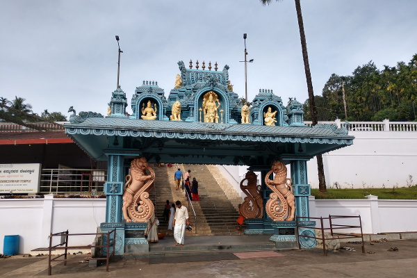

Located in the Western Ghats of Karnataka, Horanadu is known for the Sri Annapoorneshwari Temple. Pilgrims travel here to seek blessings and enjoy the serene mountain surroundings. A private taxi from Mangalore can make the journey easier for families and groups who want control over departure time, breaks and return plans.

About Horanadu Annapoorneshwari Temple
The temple is dedicated to Goddess Annapoorneshwari, associated with food and nourishment. The spiritual atmosphere and scenic setting make Horanadu an important pilgrimage destination in the Chikkamagaluru region. Visitors should follow temple instructions and confirm current darshan timings before setting out.
What to expect on the journey
The drive from Mangalore heads inland towards the Western Ghats. Conditions can vary by season, and hilly sections may be winding. Monsoon rain can affect visibility and travel time, so plan a comfortable schedule and avoid rushing between stops.
Useful planning tips
- Leave early if you are planning a same-day return to Mangalore.
- Check temple opening times, special pooja schedules and festival arrangements in advance.
- Carry drinking water, personal medication and essentials for children or older travellers.
- Wear respectful clothing suitable for a place of worship.
- Allow extra time for meals, breaks and possible traffic delays.
Can you combine Horanadu with nearby places?
Some travellers plan a longer Western Ghats itinerary and combine their pilgrimage with other destinations in the Chikkamagaluru region. Whether this is practical depends on road conditions, temple timings and how much time you have. Discuss all planned stops with your taxi provider beforehand so the schedule is realistic.
Choosing a taxi for your pilgrimage
Choose a vehicle according to the number of passengers, luggage and comfort needs. A sedan may suit a small family, while an SUV or larger vehicle may be more appropriate for a bigger group. Confirm the total fare, included kilometres, waiting time, tolls, parking charges and return arrangements before booking.
Why travel with Radhakrishna Taxi Service?
Radhakrishna Taxi Service helps travellers arrange taxi journeys from Mangalore for temple visits, family trips and Karnataka tours. Share your travel date, pickup location, group size and preferred itinerary to discuss a suitable vehicle and quote.
Enquire about a Horanadu taxi trip
Speak with Radhakrishna Taxi Service about your pilgrimage travel plans.